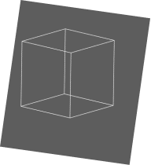
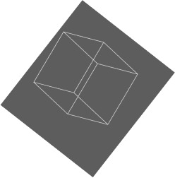
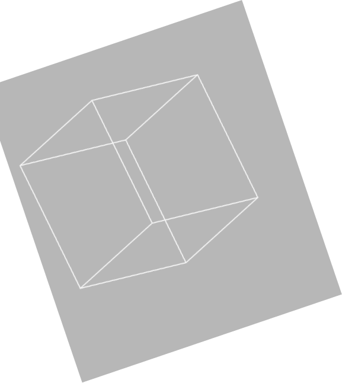

INITIA
Acclerating
Web3
Adoption
INITIA
Acclerating
Web3
Adoption
Developers need scalable and interoperable infrastructure to empower decentralized applications and economies. For crypto to reach mass adoption, users need simple touchpoints to connect to Web3.
An Interoperability First
Move Layer 1
1
Connect
Everything
Initia bring direct IBC and Cosmos composability to an incredibly poverful contracting language of Move.
2
Initiate
The Move
Move, an intuitive blockchain-specific language, creates the best developer experience for new and old Web3 builders alike.
3
Staked
Liquidity
Diversify and strengthen Initia’s chian security by staking allowlisted Balancer-style Liquidity Pool tokens directly with vaildators.
Bringing the App Chain thesis to teams in the simplest possible wat
Application specific layer 2s allow dApps, Games and Services to own their blockspace.
Application specific layer 2s allow dApps, Games and Services to own their blockspace.
East to deploy and upgrade directly through InitiaSDK
Don’t sacrifice composability, Initia L2s allow rapid transfers and messaging between any other chain
Gathering all ecosystems on Initia’s L1 Lobby
Initia's L1 Lobby provides a central hub
to connect the diverse worlds from all L2s
Facilitate near-instantaneous movement
of assets between L2s
Maximize cross-pollination between various ecosystems through
sociallzation and gamificationwhile unlocking DeFi and NFTfi for
all
The Lobby’s DEX and NFT marketplace provide
a central portal
where all assets are welcome



01
Initia SDK empowers developers by provideing deployable smart contracts to craft the token and NFT economies they want
With calls, queries, and execution
available directly in JavaScript,
InitiaSDK provides
full blockchain accessibility
to build DEXs,Marketplaces, GameFi,
and more with a language developers
arealready comfortable in

02
Use Google, Eiscord or Twitter to access
your Web3 assets and sign in
to your favorite games and metaverses on Initia
A powerful yet noob-friendly wallet complete with social logins,
on-chain account usernames, and gasless initial transactions
Access the Initia L2 multiverse as well as other Cosmos and EVM
chains through cross-chain transfers and multichain signing
INITIA